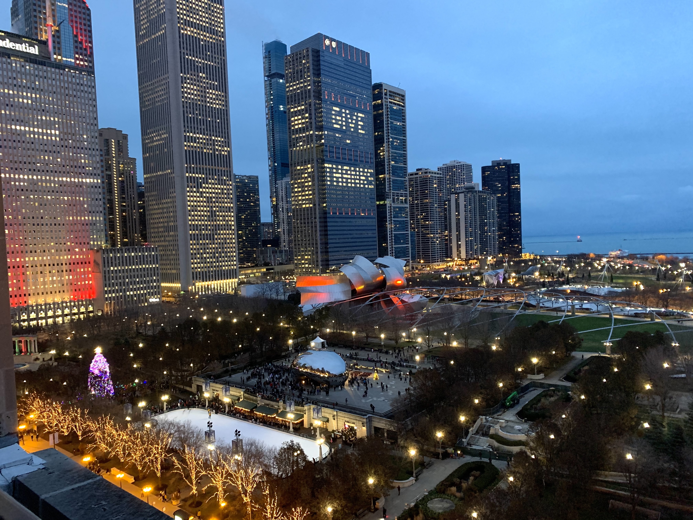
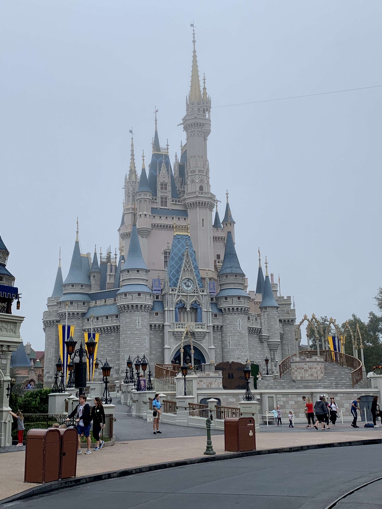
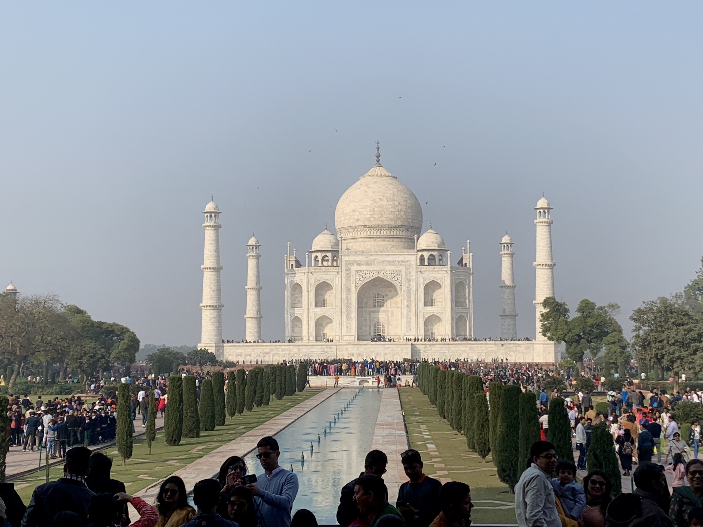
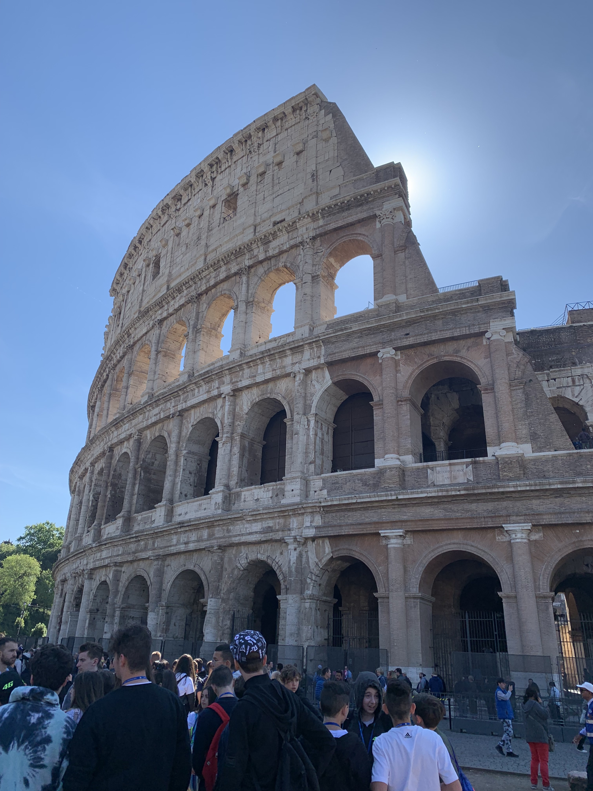
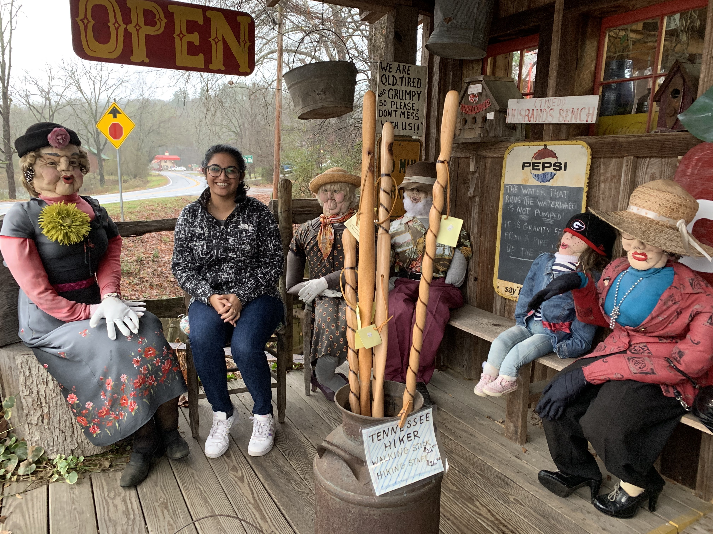
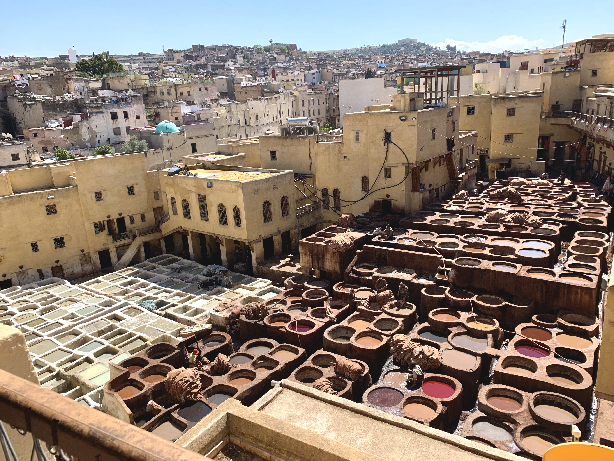
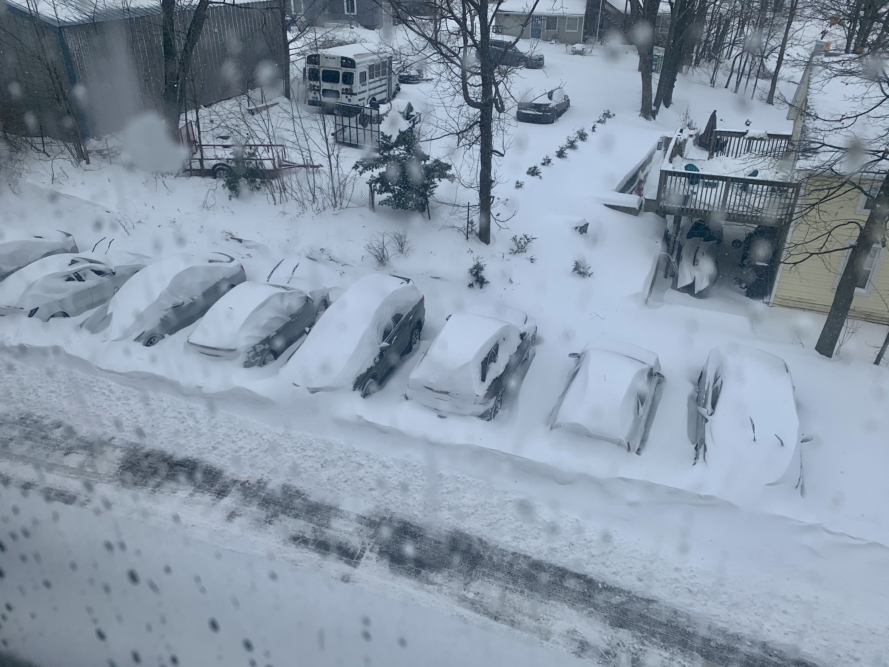

Travel Diaries
I love to travel and go to new places I haven't been to before. Whether that's international or domestic travel, I am always ready to explore! Here are some of the places I've travelled to over the last couple years:
Chicago 2019
Chicago 2019
Almost every year since 2000, my family and two other families travel between our hometowns for Thanksgiving. We go between Troy, MI, St. Louis, MO, and New York, NY. The daughter of the St. Louis family is in Chicago doing her residency, and she offered up her place for Thanksgiving in 2019, so we headed there! It was such a blast - we walked around and did tourist-y things and enjoyed each other's company.
Disney World 2019
Disney World 2019
I took a trip to Disney World in Florida with friends in February 2019. This was SO MUCH FUN! We went on so many awesome rides at all the parks, drank around the world at Epcot, and wandered around Disney Springs. One of the highlights is still the Avatar ride at Animal Kingdom. It is EPIC! If you can't get a fast pass, it's still worth that wait!
India 2018
India 2019
While I've been to India many times over the years because many of my extended family lives in Goa, I had never really travelled outside of Goa. So, in December 2018, my parents took me around to some famous spots, one of which was the Taj Mahal. It is truly beautiful in person.
Italy 2019
Italy 2019
My family and I went to Italy in March 2019 for the first time and it was such an amazing trip. Not only is the country beautiful, the wine is delicious! We went to a few vineyards, had meals and wine there, and it was all perfect. We saw the colloseum, the leaning tower of Pisa, and saw the David at a gallery. We went to different cities, including Rome, Florence, and Assisi. It was truly a magical trip!
Maine 2019

Maine 2019
I road tripped to Maine with my brother in July 2019. We went to Portland, Bar Harbor, Acadia National Park, and stopped at a few other places along the way. We ate a lot of lobster on this trip! My favorite was Acadia National Park. We hiked on a few trails which were awesome - heads up, the Beehive Trail is kind of crazy. But it had gorgeous views! Wish we could've spent a few more days exploring the park.
Georgia 2019
Georgia 2019
For Christmas 2019, my parents and I visited my uncle and his family in Augusta, GA. While there, we took a few day trip to Helen, GA. It's a cute little tourist-y town. It has a Bavarian aesthetic and make it full of life during christmas with all the lights and decorations. This picture was taken at a local shop!
U.S. Open 2019

U.S. Open 2019
My brother was able to get tickets to the US Open in 2018, so we were able to watch some games in person. It was convenient because at the time, I lived in NYC and he lived in Bristol, CT (still does!). Since he works at ESPN and knew some folks working behind the scenes at the US Open, we were able to go up to the top of one of the stadiums, which is where I took this picture from!
Morocco 2020
Morocco 2020
My family and I went to Morocco in March 2020, just before the pandemic. It was an insane trip back because we were on one of the last flights out of Morocco before they closed their borders. Morocco is absolutely beautiful, and the food is so delicious. We travelled to different cities, but one of my favorites was Marrakesh. This photo was taken at a leather shop in Marrakesh, you can see how they dye the leather.
Connecticut 2020
Connecticut 2020
My brother turned 30 in December 2020, and with the pandemic he couldn't come back home to Michigan because of work. So, a friend and I drove from Michigan to Connecticut for his birthday. The friend was a surprise, so he thought I was driving 11 hours by myself to see him. Well, we got caught in the snowstorm that hit the east coast. The 11 hour drive ended up becoming a nightmare-ish 16 hours. We even saw a semi go into a ditch. But we made it in one piece and were able to celebrate his birthday with no other issues!